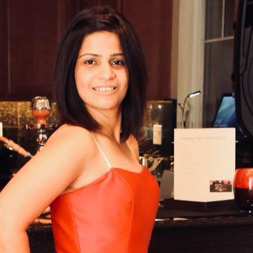

Rohini Tomar

Download My CV
My name is Rohini Tomar, a Full Stack Web Developer with a background in Academics. With more than 6+ years of working as a Physics Lecturer in a highly professional academic environment I have mastered my Reflective Thinking which includes observation, communication, team working, critical thinking,judgment and decision making.I strive for constantly learning and improving which is very important in a fast moving industry like ours to stay on top of your game .
I want to further apply my love for coding and newly acquired skills in Web Development and drive the process of designing websites.
Download My CV